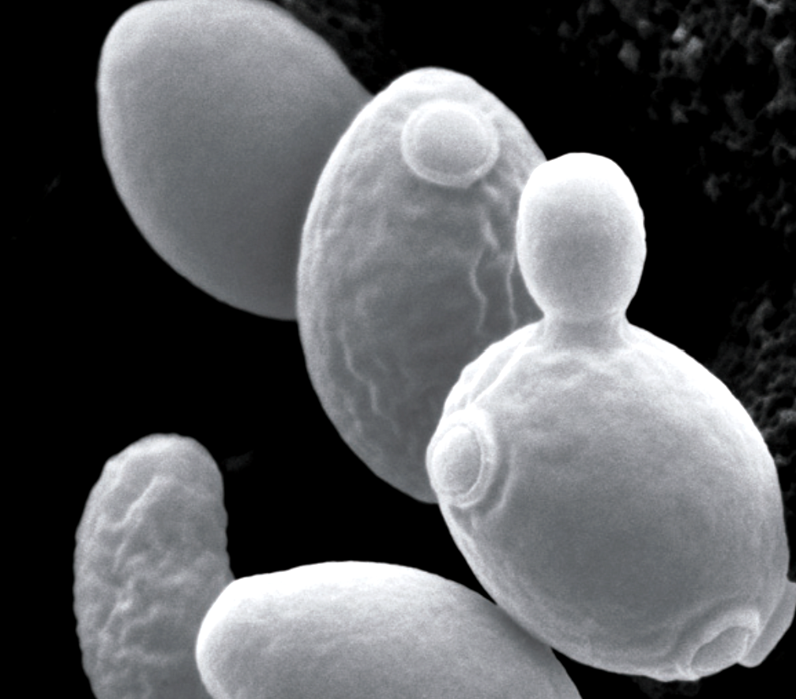

學習內容
真菌有單細胞的，也有多細胞的。酵母菌是單細胞、無菌絲的真菌； 黴菌是多細胞、有菌絲的真菌；蕈類也是多細胞、有菌絲的真菌，屬於大型真菌。 黑黴菌與青黴菌都屬於黴菌，其中青黴菌可提煉抗生素。
- 酵母菌：單細胞、無菌絲
- 黴菌：多細胞、有菌絲
- 蕈類：多細胞、有菌絲、大型真菌
- 青黴菌可提煉抗生素
1
任務一：翻牌認識三大代表
請把三張卡片都點開看過，認識酵母菌、黴菌、蕈類的特徵。

酵母菌
點我看特徵
酵母菌
單細胞、無菌絲
可用來做麵包、釀酒
黴菌
點我看特徵
黴菌
多細胞、有菌絲
黑黴菌、青黴菌都屬於黴菌
青黴菌可提煉抗生素
蕈類
點我看特徵
蕈類
多細胞、有菌絲
屬於大型真菌
例如香菇、木耳
2
任務二：特徵拖曳分類
先點選特徵卡，再點上方正確區域，把特徵放到酵母菌、黴菌或蕈類。
酵母菌
把屬於酵母菌的特徵放這裡
黴菌
把屬於黴菌的特徵放這裡
蕈類
把屬於蕈類的特徵放這裡
單細胞
無菌絲
有菌絲
可提煉抗生素
大型真菌
有菌絲
3
任務三：生活情境配對
把生活中的現象配對到正確真菌類別。
對人類有幫助
造成發霉或常見現象
麵團膨脹（酵母菌）
麵包發霉（黴菌）
黑色霉斑（黑黴菌）
青黴菌可提煉抗生素
4
任務四：黴菌小偵探
請選出正確敘述。

黑黴菌可用來做麵包。
青黴菌可用來提煉抗生素。
5
任務五：觀念速記
請完成三種真菌特徵的比較表。
| 種類 | 單／多細胞 | 細胞壁 | 菌絲 | 葉綠體 | 主要繁殖方式 |
|---|---|---|---|---|---|
| 酵母菌 | |||||
| 黴菌 | |||||
| 蕈類 |
請先完成本頁所有任務，並全部答對，才能進入下一頁。
下一頁 →